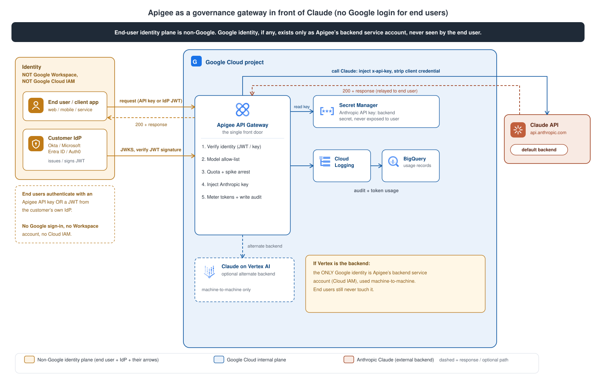

A proof of concept: end-users reach Claude (Anthropic) through Apigee with no Google login, while Apigee enforces policy, meters usage, and audits every call.
Apigee customers want their end-users to consume Claude services and runtimes that sit behind Apigee, without logging into anything Google (Google Workspace or the Cloud Console). Apigee stays the governance layer: policy enforcement, usage metering, and full audit. Everything is tracked, and the real Anthropic credential never leaves Apigee.

POST /claude/v1/messages with a non-Google credential.gw.principalFull step-by-step with the reasoning, secret handling, the streaming note, and the acceptance script live in the source doc.
📄 poc-architecture.md| Option | End-user holds | Apigee verifies with | Status |
|---|---|---|---|
| A. Apigee API key | API key tied to an Apigee Developer App | VerifyAPIKey | WIRED |
| C. Customer-IdP JWT | JWT from the customer's own Okta / Entra / Auth0 | EV-BearerToken + VerifyJWT (JWKS) | WIRED |
| B. Apigee OAuth2 | short-lived token from Apigee's token endpoint | OAuthV2 | OPTIONAL |
Authorization: Bearer ... has its raw token extracted (EV-BearerToken, which strips the Bearer prefix) and verified as a customer-IdP JWT, otherwise the x-app-key API key is verified. Both resolve a single gw.principal, so quota, metering, and audit are identical regardless of auth method. The IdP issuer, JWKS, and audience come from resources/properties/idp.properties, so the same bundle points at any customer IdP by config, not code.| Policy | Type | Does |
|---|---|---|
EV-BearerToken | ExtractVariables | Strip the Bearer prefix into jwtsrc.token for VerifyJWT. Option C. |
VJ-VerifyIdpToken | VerifyJWT | Validate customer-IdP JWT (RS256, JWKS, iss/aud/exp). Option C. |
VA-VerifyKey | VerifyAPIKey | Validate Apigee API key, load app/tier context. Option A. |
AM-PrincipalFrom{Jwt,Key} | AssignMessage | Resolve uniform gw.principal, tier, auth_method. |
EV-ReqModel | ExtractVariables | Pull the requested model and stream flag from the request body. |
RF-StreamingNotAllowed | RaiseFault | Reject (400) stream:true, so token metering stays exact. |
RF-ModelNotAllowed | RaiseFault | Reject (403) a model not on the gateway allow-list. |
SA-SmoothBurst | SpikeArrest | Smooth bursts to protect the backend. |
QU-PerAppDaily | Quota | Per-principal daily budget, 429 when exceeded. |
AM-SetTarget | AssignMessage | Backend path + X-Request-Id correlation id. |
KVM-GetAnthropicKey | KeyValueMapOperations | Read Anthropic key from an encrypted KVM. |
AM-InjectBackendAuth | AssignMessage | Inject x-api-key on backend leg, strip user credential. |
EV-Usage | ExtractVariables | Pull token counts (input, output, and cache tokens) + model from the response. |
AM-Scrub | AssignMessage | Strip backend/debug headers before returning. |
SC-Tokens | StatisticsCollector | Record tokens (incl. cache), HTTP status, principal, auth method, tier into Analytics. |
ML-Audit | MessageLogging | Structured audit line to Cloud Logging, then BigQuery/SIEM. |
RF-AuthError | RaiseFault | Clean 401 JSON on any auth failure (DefaultFaultRule). |
stream:true), then 400.These are the choices you make when you put this gateway in front of Claude. The gateway ships with sensible defaults (shown in green), and each is configurable to your policy. None of them require your users to have a Google account.
| Your choice | Options | Default we ship |
|---|---|---|
| How your end users authenticate | Your own IdP (Okta, Entra ID, Auth0) via JWT, or Apigee-issued API keys. | Your IdP via JWT for enterprise, API keys for simple apps. No Google sign-in either way. |
| Which Claude models your users may call | Any subset of the Claude family, enforced as an allow-list. | Opus, Sonnet, Haiku allowed; anything else returns 403. |
| Rate limits and daily quotas | Per user, per app, or per tier. | 1000 calls/day per principal plus spike-arrest; tune per tier. |
| Where audit and usage data goes | Apigee Analytics, Cloud Logging to BigQuery, or your own SIEM. | Apigee Analytics + BigQuery; SIEM export optional. |
| What the audit records | Metadata only, or full prompt and response capture. | Metadata only (identity, request id, model, token counts, status, time). Body capture is off for privacy, switchable on. |
| How cost is attributed | Per end user, per app, or per team/tier. | Per principal (per user for JWT, per app for API key), aggregable to tier. |
| Streaming responses | Streaming (SSE) or standard responses. | Standard responses for exact metering; streaming on the roadmap. |
| Where Claude runs (data residency) | Anthropic API direct, Claude on Vertex AI, or Claude on Bedrock. | Anthropic API direct; Vertex AI or Bedrock available as an adapter (different path, auth, and version) if you need in-cloud residency. |
| Isolation model | One shared gateway, or a dedicated environment per business unit. | Shared gateway with per-app and per-IdP isolation; dedicated env available. |
The reasoning behind each default is recorded as an ADR (architecture decision record) in the decision log.
📄 decisions.md (ADRs)